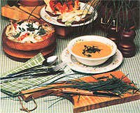
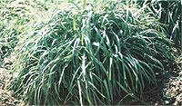

This delicious Oriental herb will "spice up" your garden or windowsill, as well as your cuisine.
Growing herbs is a downright satisfying experience. After all, the little food enhancers not only add a variety of attractive foliage to the garden, but are also indispensable in the kitchen.
And if you're looking for a touch of the exotic to add to your culinary creations, you might like to try garlic chives . . . an herb that's long been used in Chinese cooking to intensify the flavor of stir-fried vegetable and meat dishes. (In fact, many Oriental homes maintain a large patch of the flavoring right outside the door.)
A cousin of the onions - they all belong to the genus Allium - this hardy plant is easy to grow (either outdoors in your garden or indoors in a pot) . . . requires only minimal care . . . and yields thick clusters of grassy leaves. What's more, the herb's mild flavor provides a delightful alternative to the stronger taste of regular garlic.
PLANTING AND CULTIVATION
You can grow your own supply of the savory vegetation from seeds or starter plants. In either case, give them a sunny spot and water them well. Within a few months the shoots will develop into grassy clumps approximately 8 to 10 inches across and 12 to 16 inches high . . . both broader and taller than domestic chives.
The herb is a hardy cultivar that can survive prolonged periods of drought . . . but under dry conditions the plants won't produce much of their flavorsome foliage, so you may want to mulch the bed with moisture-retaining straw. And to protect the stand from encroaching weeds, it's a good idea to encircle the area with stones, discarded chunks of cement block, or old boards.
Although garlic chives are resistant to subzero temperatures, you might like to transplant some to a pot during the colder months, to brighten your kitchen windowsill. In order to move the Oriental herbage indoors, just cut out a six-inch circle from an existing clump-making sure that you don't slice off the bulbous roots-and press the mass into a medium-sized planter. Trim the leaves down to their thick stems, add more soil to the pot . . . and watch new growth appear within 24 hours!
If you want your potted garlic chives to sport abundant foliage, however, you'll need to keep them well supplied with food and drink: We fertilize our potherbs with fish oil emulsion and water them with homemade "manure tea".
CULINARY USES
You can cut the flat, aromatic leaves - for seasoning purposes - as soon as the plant has reached a height of four inches ... and that operation should be done before the small white flowerheads appear on the stalks. (In order to keep your indoor plants full, however, you should maintain at least two pots, so that you can "rotate your crops" and allow each one to grow for a few weeks between cuttings.)
When you're ready to add the herb to a recipe, snip off the leaves about three inches above the soil, and chop them into quarter-inch pieces. Garlic chives should be used immediately after pruning, since the pungent flavor disappears if the foliage is stored for even a few hours. (For that reason, this variety can't be successfully dried and preserved for later use, as can many other herbs . . . which is why the condiment isn't often commercially available.)
We add the fresh herbal bits to sandwiches, salads and dressings, and meats. They're also delicious sprinkled on top of soup just before it's served. Recently, when entertaining some guests for dinner, we arranged steaks on a bed of colorful garlic chives ... actually more for decoration than for flavor. Well - as you may have guessed - our friends ate and enjoyed the tasty garnish right along with the meat!
If you'd like to add garlic chives to your collection of homegrown herbs, you can order a packet of seeds (for 75 cents) from Burpee Seed Company, Dept. TMEN, 300 Park Avenue, Warminster, Pennsylvania 18991. But you'd better buy and plant several packages . . . because as soon as your neighbors taste the savory leaves, they'll be asking for transplant cuttings from your windowsill or garden!
|
 |
 |
|